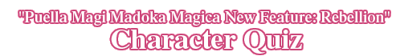
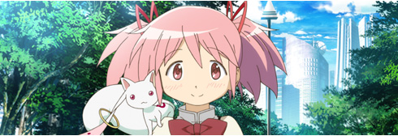
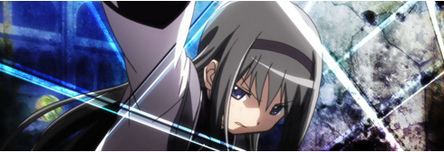
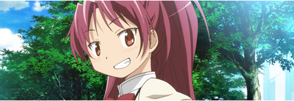
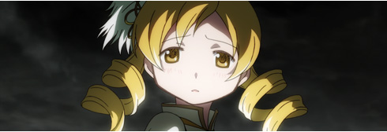
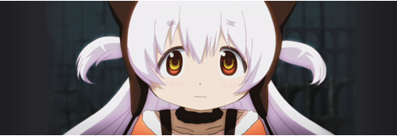

דPuella Magi Madoka Magica,” which has captured your imagination with a unique world view, unpredictable plots and attractive characters, is coming back. To celebrate the release of its all-new movie, “Puella Magi Madoka Magica New Feature: Rebellion,” you can find out who among the major characters in the story you resemble.
It's easy to find it out.
Click “Analyze” shown below, and you'll answer five questions. Your answers to the questions will be analyzed to determine which character you resemble.
Do you want to know which character you resemble? Imagine you are in the world of the story, and why don't you find it now!
4 Questions to go
3 Questions to go
2 Questions to go
2 Questions to go
2 Questions to go
2 Questions to go
1 Questions to go

You are gentle and care about your friends, and you are loved by everybody around you. You have a kind and sensitive character, and you may worry and hesitate, but you have your own way of thinking so you are able to make the right decisions in important situations without being influenced by those around you. The character that is similar to you is Madoka Kaname, who tried to save magical girls who are burdened by their harsh fate. If you can stay in a cheerful mood without forgetting to care for others, you can meet a wonderful partner with whom you can spend a lifetime together!

You face every difficulty on your own, and you are someone whom people can rely on when it matters most. Since you are not a person who makes yourself pleasant to the people around you, you may be perceived as cool, but you have a “passion” that makes you willing to sacrifice yourself for someone who is precious to you. The character that is similar to you is Homura Akemi, an enigmatic transfer student who makes repeated warnings to Madoka. Even if you failed several times like her, if you make an effort and overcome it, you can experience great growth as a person!
You strongly wish for others’ happiness and you have a strong sense of justice. You may experience conflict with others quite a lot because of your strong assumptions, but in return you are not second to anyone when it comes to the intensity of your love for the people you have taken a liking toward. The character similar to you is Sayaka Miki, who becomes a magical girl in order to heal her childhood friend Kyosuke, whose dreams were dashed by an accident. Like her, if you get close to someone you love deeply, your feelings will surely reach them!

You do not like being cozy with others you have a down-to-earth personality, so you are like a lone wolf who acts according to your own principles. You hate hypocrisy and self-complacency so much that you tend to act like you want to boast your faults, but in actuality you have an honest and caring disposition. The character similar to you is Kyoko Sakura, the magical girl who opposed Madoka Kaname and Sayaka Miki in the beginning. Like Sakura, who eventually became a great ally to Madoka and the others, if you show your honest feelings to others and disclose yourself, you can surely make irreplaceable friends!

Your personality is so gentle and exemplary that a lot of people love you and rely on you. Since you have a strong sense of duty and are devoted to your beliefs, you can be said to have a good influence on others. The character similar to you is Mami Tomoe, who shows the “reality” of being a magical girl to Madoka Kaname and Sayaka Miki and teaches them the importance of being resolute. If you can lead others sometimes with severity and sometimes with kindness like her, you can surely be respected in the true sense of the term!

You are both pure and helpless like a child, so you receive a lot of attention from others. Somehow, you also have enigmatic elements that make you a mysterious person. The character similar to you is Nagisa Momoe, the new magical girl who appears in the theatrical version. Just what kind of character is she? Check it out in theaters!
(C)Magica Quartet/Aniplex･Madoka Movie Project Rebellion